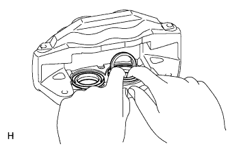
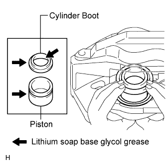
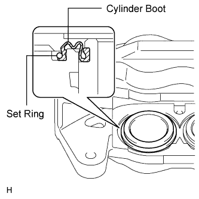

FRONT BRAKE > REASSEMBLY |
| 1. TEMPORARILY INSTALL FRONT DISC BRAKE BLEEDER PLUG |
Temporarily install the bleeder plug to the disc brake caliper.
| 2. INSTALL FRONT DISC BRAKE BLEEDER PLUG CAP |
| 3. INSTALL PISTON SEAL |
Apply lithium soap base glycol grease to 4 new piston seals.
 |
Install the 4 piston seals to the disc brake caliper.
| 4. INSTALL FRONT DISC BRAKE PISTON |
 |
Apply lithium soap base glycol grease to the 4 front disc brake pistons and 4 new cylinder boots.
Install the 4 cylinder boots to the 4 front disc brake pistons.
Install the 4 pistons into the front disc brake caliper.
| 5. INSTALL CYLINDER BOOT |
 |
Install one side of each of the 4 cylinder boots to the front disc brake caliper.
| 6. INSTALL FRONT DISC BRAKE PISTON SET RING |
Install the 4 set rings.